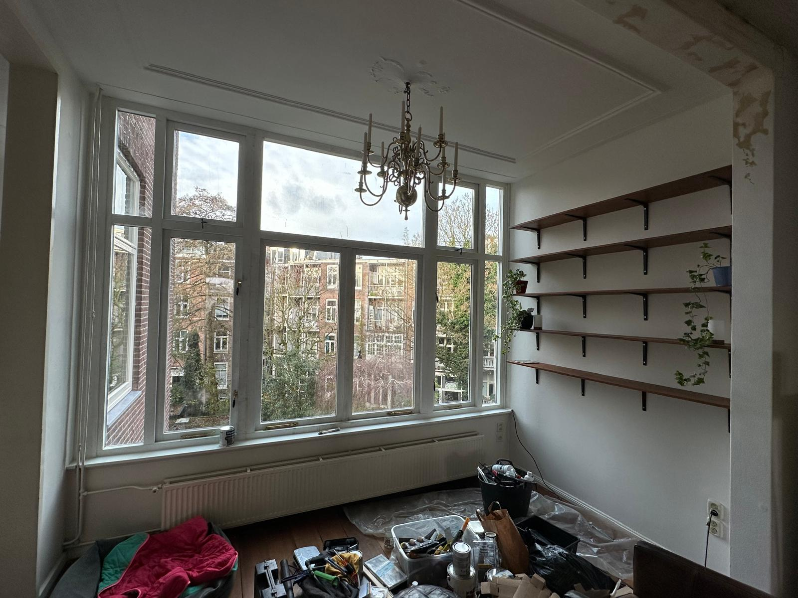
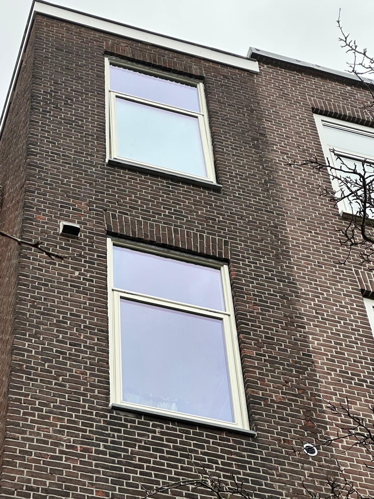

Onze Kozijn Projecten
Vakwerk tot in de puntjes



Vakkundige plaatsing en renovatie van hoogwaardige kozijnen, inclusief stucwerk en perfecte isolatie.
Nieuwe kozijnen transformeren de uitstraling van uw pand en zorgen voor een drastische daling in uw energiekosten. Wij verzorgen het complete traject, van het inmeten tot de absolute eindafwerking.
Vakwerk tot in de puntjes

